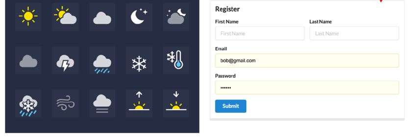

Welecome to WeatherTop Inc. web application for weather station WeatherTop 1000. This site servers a companion application for the device. vice takes a set of meteorological readings and displays these on a simple LCD display. Our new web application is a Web companion application for the device. Access your weather data anywhere, anytime, on any connected device.
Connect to the WeatherTop Network
Your Own Weather Server to keep private or share with friends and family. Send real time data to WeatherTop.net. Our mobile friendly and responsive design allows you to analyze your readings. WeatherTop ensures contributors can do more than simply measure the weather, so we created the most connected platform in the industry. Quickly view detailed information with our animated expandable modules. Monitor indoor and outdoor conditions, including wind speed, wind direction, rainfall, temperature, wind chill and more. Features dials, gauges, graphs and text reports for every parameter.
Outputs
The dashboard for application produces the following outputs
- Station Name
- Weather conditions - code presented as a description
- Temp in both C & F
- Wind in Beaufort
- Pressure
- Wind Direction
- Location of Station
- Current Weather Icon
- Maximum and minimum readings
- Trends
User Accounts System

By accessing the WeatherTop application with your user account, your associated stations and
readings
are always avaiable to you.
If you have not already, please signup

Free Features
As a purchaser of our weather station you are entilted to free use of the WeatherTop application.This allows full access to all reading and data via any web browser. Just signup now.